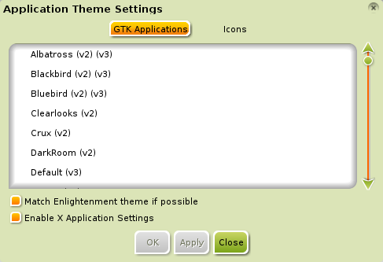
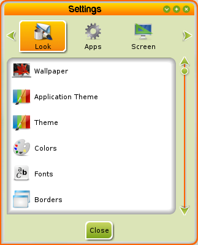
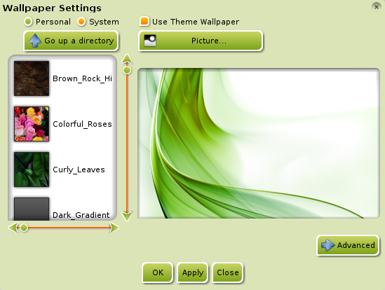
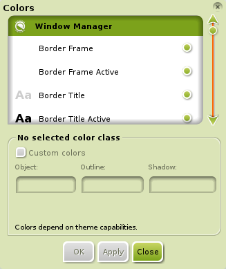
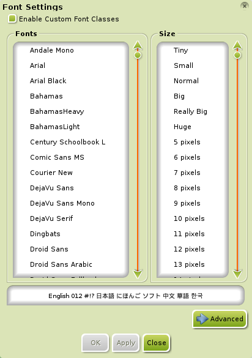
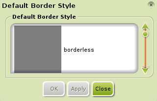
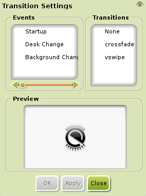
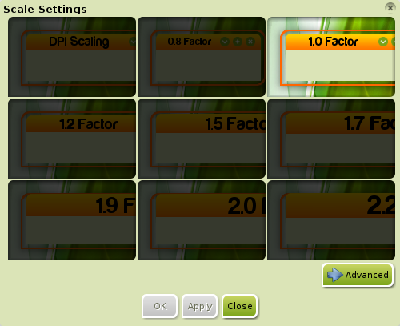

[kliknite na bilo koju sliku za uvećanje]
Mnogi programi/stavke se ne mogu direktno konfigurisati preko E17 Tema ili su previše konfigurisani na žalost korisnika. Ovaj deo je namenjen korisnicima koji bi želeli da promene specifične aspekte.
Osnovno Pravljenje Tema (Basic Theming)
E17 obezbeđuje način za kontrolu izgleda GTK/QT programa. Da mu pristupite, idite na Main Menu>Settings>All>Look>Application Theme. U standardnoj(default) traci(tab), GTK Programi (GTK Applications), videćete ekran koji izlistava sve GTK/QT teme koje su vam instalirane.
{kind=link}
Jednostavno selektujte GTK/QT temu koju želite da koristite, zatim kliknite Primeni (Apply). Kada ste našli temu sa kojom ste zadovoljni, kliknite Zatvori (Close)
E17 + GTK/QT Integracija
Neke E17 teme imaju definisane GTK/QT teme sa kojima se podudaraju. Ovo omogućava da se GTK/QT tema automatski promeni kada se promeni E17 tema (pogledajte Teme (Themes) za više informacija). Da omogućite ovu funkcionalnost, otvorite Main Menu>Settings>All>Look>Application Theme i čekirajte dva polja za Podudari sa Enlightenment temom ako je moguće (Match Enlightenment theme if possible) i Uključi X Podešavanja Programa (Enable X Application Settings).
Trebalo bi ovde naglasiti da postoje mnoge E17 teme koje nemaju predefinisanu GTK/QT, što znači da promena E17 teme neće uticati na GTK/QT temu.
E17 + Ikonica Temiranje (Icon Theming)
Neke E17 teme dolaze sa ugradjenim ikonicama sa kojima se podudaraju. Mnoge to nemaju. Rešenje? Instaliranje i primena teme za ikonice!
Prvi korak bi bio instaliranje teme za ikonice koju bi želeli da ugradite na vaše platno (canvas)/radnu površinu.
Srećom po vas, sam Bodhi Linux, nudi pregršt izbora na tom polju. Možete instalirati jednu temu za ikonice ili možete instalirati sve teme za ikonice odjednom u jednom koraku!
Jedna opcija je brza pretraga u Synaptic-u (Main Menu>Applications>Preferences>Synaptic Package Manager) ili,
radije, otvorite Midori (Main Menu>Applications>Internet>Midori) , Bodhi-jev standardni(default) internet pregledač (web-browser), i idite na
Bodhi Art - Icon Themes.
Jednom kada ste instalirali temu za ikonice, otvorite Main Menu>Settings>All>Look>Application Theme
i idite do Ikonice (Icons) trake(tab). Odatle, klizite(skrolujte) na dole kroz listu dostupnih tema za ikonice i selektujte onu koju želite. E17 ima ugrađen pregled(preview) tema za ikonice u dijalogu, kao što je prikazano ispod, da vam pomogne u odlučivanju.
Da uključite temu za ikonice koju će koristiti vaši programi, čekirajte polje za Uključi temu za ikonice za programe (Enable icon theme for applications).
Sada kliknite Primeni (Apply) i OK. To je sve, gotovo!
{kind=link}
Da poništite uticaj ugrađene ikonice vaše E17 teme sa vašom novom primenjenom temom za ikonice, čekirajte Uključi temu za ikonice za Enlightenment (Enable icon theme for Enlightenment) i to će poništiti uticaj ikonice E17 teme.
Ostala Prilagođavanja
E17 ima još mnogo podešavanja za prilagođavanje ukupnog izgleda Bodhi Linux-a.
Da biste ih videli sve, idite na
Main Menu>Settings>All i kliknite Izgled (Look).
Sledeći dijalog bi trebalo da se pojavi:

{kind=link}
Svaka opcija prilagođava specifičnu odliku vaše radne površine. Ima ih mnogo i, zbog toga, mi ćemo ovde pokriti samo neke:
-
Tapet (Wallpaper)
Ovo podešavanje vam omogućava da dodelite tapete na vašu radnu površinu. Čekirajte Koristi Tapet Teme (Use Theme Wallpaper) da koristite tapet vaše teme. Možete ubaciti vaše lične tapete tako što ćete kliknuti na dugme Slika (Picture). Kliktanjem na dugme Napredno (Advanced) vam omogućava da izaberete da li da primenite tapet na sve radne površine ili samo na vaš trenutni ekran/radnu površinu. Sve je manje-više samoobjašnjivo. -
Boje (Colors)
Ova sekcija vam omogućava da izaberete boje koje želite za prozore, widgete, i tako dalje. Dugme Prilagođene Boje (Customized colors) mora biti čekirano kako bi vam opcije bile dostupne. -
Fontovi (Fonts)
Ovo vam omogućava da promenite font i prilagodite veličinu fonta. Polje Uključi Prilagođene Font Klase (Enable Custom Font Classes) mora biti čekirano radi prilagođavanja podešavanja. Kliktanje na dugme Napredno (Advanced) vam omogućava da izaberete specifičnu stavku kojoj želite da dodelite drugačiji font i ako je moguće, izaberete njegov font-stil (npr, Italic, Bold, Regular, itd). -
Ivice (Borders)
Omogućava vam da izaberete tip-ivice(border-type) koji želite da koristite za sve prozore, bilo da je to bezivično(borderless), dijalog, ne menjanje veličine(noresize), ili druge opcije. Jednostavno i samoobjašnjivo. -
Tranzicije (Transitions)
Ovo vam omogućava da izmenite tip tranzicije na vašem sistemu, bilo da je to početak(startup), promena između Virtualnih Radnih Površina (Virtual Desktops), ili promena pozadine(background). Trenutno dostupni tipovi tranzicije su nijedan (none), crossfade, i vertikalno ukrasti (vertical swipe). Prikazuje vam i pregled, tako da možete da vidite kako to izgleda. -
Skaliranje (Scaling)
Ovo vam omogućava da skalirate celu radnu površinu: menije, police, stavke/atribute teme, fontove i sve. Vrlo lako za shvatiti i jednostavno za korišćenje.
{kind=link}
{kind=link}
{kind=link}
{kind=link}
{kind=link}
{kind=link}
Tapet (Wallpaper)
Ovo podešavanje vam omogućava da dodelite tapete na vašu radnu površinu. Čekirajte Koristi Tapet Teme (Use Theme Wallpaper) da koristite tapet vaše teme. Možete ubaciti vaše lične tapete tako što ćete kliknuti na dugme Slika (Picture). Kliktanje na dugme Napredno (Advanced) vam omogućava da izaberete da li da primenite tapet na sve radne površine ili samo na vaš trenutni ekran/radnu površinu. Sve je manje-više samoobjašnjivo.Boje (Colors)
Ova sekcija vam omogućava da izaberete boje koje želite za prozore, widgete, i tako dalje. Dugme Prilagođene Boje (Customized colors) mora biti čekirano kako bi vam opcije bile dostupne.Fontovi (Fonts)
Ovo vam omogućava da promenite font i prilagodite veličinu fonta. Polje Uključi Prilagođene Font Klase (Enable Custom Font Classes) mora biti čekirano radi prilagođavanja podešavanja. Kliktanje na dugme Napredno (Advanced) vam omogućava da izaberete specifičnu stavku kojoj želite da dodelite drugačiji font i ako je moguće, izaberete njegov font-stil (npr, Italic, Bold, Regular, itd).Ivice (Borders)
Omogućava vam da izaberete tip-ivice(border-type) koji želite da koristite za sve prozore, bilo da je to bezivično(borderless), dijalog, ne menjanje veličine(noresize), ili druge opcije. Jednostavno i samoobjašnjivo.Tranzicije (Transitions)
Ovo vam omogućava da izmenite tip tranzicije na vašem sistemu, bilo da je to početak(startup), promena između Virtualnih Radnih Površina (Virtual Desktops), ili promena pozadine(background). Trenutno dostupni tipovi tranzicije su nijedan (none), crossfade, and vertikalno ukrasti (vertical swipe). Prikazuje vam i pregled, tako da možete da vidite kako to izgleda.Skaliranje (Scaling)
Ovo vam omogućava da skalirate celu radnu površinu: menije, police, stavke/atribute teme, fontove i sve. Vrlo lako za shvatiti i jednostavno za korišćenje.Biće još opisa u budućnosti!